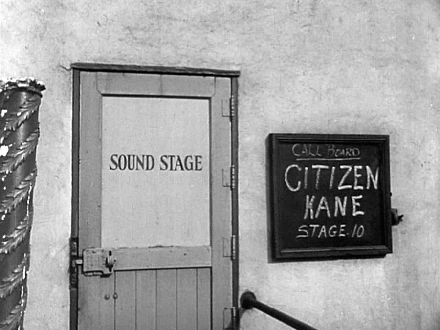

Production advisor Miriam Geiger quickly compiled a handmade film textbook for Welles, a practical reference book of film techniques that he studied carefully. He then taught himself filmmaking by matching its visual vocabulary to The Cabinet of Dr. Caligari, which he ordered from the Museum of Modern Art, and films by Frank Capra, René Clair, Fritz Lang, King Vidor and Jean Renoir. The one film he genuinely studied was John Ford's Stagecoach, which he watched 40 times. "As it turned out, the first day I ever walked onto a set was my first day as a director," Welles said. "I'd learned whatever I knew in the projection room—from Ford. After dinner every night for about a month, I'd run Stagecoach, often with some different technician or department head from the studio, and ask questions. 'How was this done?' 'Why was this done?' It was like going to school."
Welles's cinematographer for the film was Gregg Toland, described by Welles as "just then, the number-one cameraman in the world." To Welles's astonishment, Toland visited him at his office and said, "I want you to use me on your picture." He had seen some of the Mercury stage productions (including Caesar) and said he wanted to work with someone who had never made a movie. RKO hired Toland on loan from Samuel Goldwyn Productions in the first week of June 1940.
"And he never tried to impress us that he was doing any miracles," Welles recalled. "I was calling for things only a beginner would have been ignorant enough to think anybody could ever do, and there he was, doing them." Toland later explained that he wanted to work with Welles because he anticipated the first-time director's inexperience and reputation for audacious experimentation in the theater would allow the cinematographer to try new and innovative camera techniques that typical Hollywood films would never have allowed him to do. Unaware of filmmaking protocol, Welles adjusted the lights on set as he was accustomed to doing in the theater; Toland quietly re-balanced them, and was angry when one of the crew informed Welles that he was infringing on Toland's responsibilities. During the first few weeks of June, Welles had lengthy discussions about the film with Toland and art director Perry Ferguson in the morning, and in the afternoon and evening he worked with actors and revised the script.

On June 29, 1940—a Saturday morning when few inquisitive studio executives would be around—Welles began filming Citizen Kane. After the disappointment of having Heart of Darkness canceled, Welles followed Ferguson's suggestion and deceived RKO into believing that he was simply shooting camera tests. "But we were shooting the picture," Welles said, "because we wanted to get started and be already into it before anybody knew about it."
At the time RKO executives were pressuring him to agree to direct a film called The Men from Mars, to capitalize on "The War of the Worlds" radio broadcast. Welles said that he would consider making the project but wanted to make a different film first. At this time he did not inform them that he had already begun filming Citizen Kane.
The early footage was called "Orson Welles Tests" on all paperwork. The first "test" shot was the News on the March projection room scene, economically filmed in a real studio projection room in darkness that masked many actors who appeared in other roles later in the film. "At $809 Orson did run substantially beyond the test budget of $528—to create one of the most famous scenes in movie history," wrote Barton Whaley.
The next scenes were the El Rancho nightclub scenes and the scene in which Susan attempts suicide. Welles later said that the nightclub set was available after another film had wrapped and that filming took 10 to 12 days to complete. For these scenes Welles had Comingore's throat sprayed with chemicals to give her voice a harsh, raspy tone. Other scenes shot in secret included those in which Thompson interviews Leland and Bernstein, which were also shot on sets built for other films.